The slides as text. Every slide's title, text and figures from the session EasyMeta.org and AI in Meta-Analysis at the MAER-Net 2026 PhD workshop, TU Chemnitz, 23 September 2026, generated from the LaTeX source so that it can be read and searched without opening a PDF. The few diagrams drawn in LaTeX itself are shown as pictures of the slide.
The slides are as prepared for the workshop. Each heading links to its page of the PDF.
Sections: meta-analysis.cz, easymeta.org, MAIVE/WAIVE, Guidelines, AI Tools, Takeaway and Backup.
meta-analysis.cz
meta-analysis.cz p. 2
- 71 papers in full, most with data and code
- 46 datasets; one pooled table of about 50,000 estimates
- R replication for 37 papers
- A page written for AI assistants
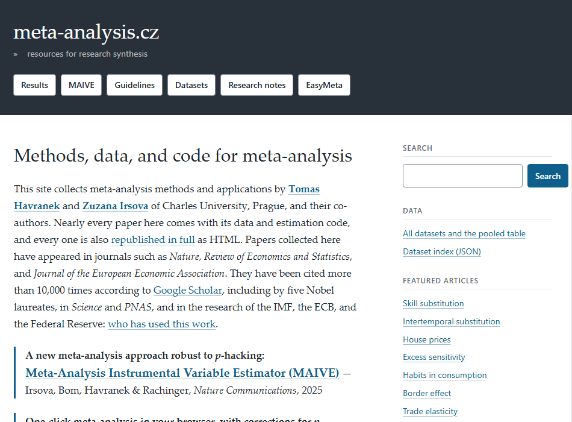
What correction does to 44 of our results p. 3
31 moved toward zero, 11 away from it, 2 did not move.
Median revision: -41%.
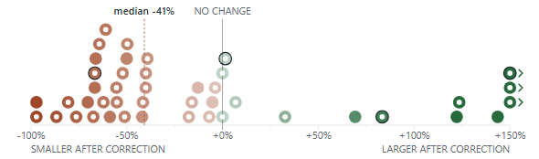
easymeta.org
easymeta.org p. 4
- Upload effect, SE, sample size, study ID
- PET-PEESE, EK, MAIVE, WAIVE, RTMA, RDT
- Clustering, winsorizing, weights, Anderson-Rubin intervals
- A reproducibility package to download
Built by Petr Cala. Also runs through an API.
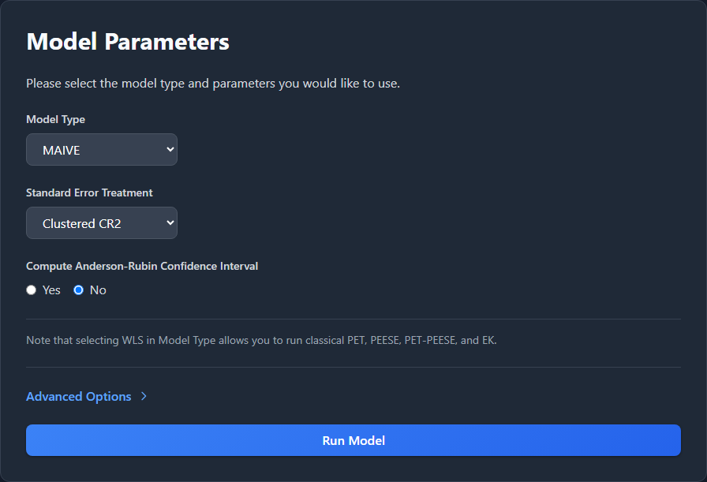
Demo data: electricity demand p. 5
Short-run price elasticities: 1,647 estimates from 226 studies, winsorized 2.5%
Kudela, Havranek, Irsova, Kudelova & Sikl (2026), meta-analysis.cz/electricity
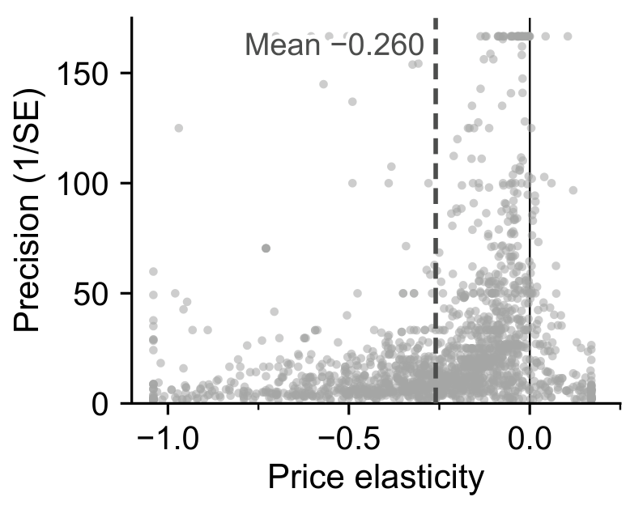
One click per estimator p. 6
| Elasticity | SE | |
|---|---|---|
| Simple mean (winsorized) | -0.260 | |
| PET | -0.105 | 0.033 |
| PEESE | -0.127 | 0.027 |
| EK | -0.105 | 0.033 |
| PEESE, not clustered | -0.127 | 0.013 |
| PEESE, winsorize 1% | -0.118 | 0.029 |
| PEESE, equal weights | -0.226 | 0.019 |
PET-PEESE picks PEESE. EK finds no kink (too much heterogeneity), so it equals PET. The paper, with a richer model: -0.16.
The same run from Claude p. 7
| App | API, through Claude | |
|---|---|---|
| PET-PEESE | -0.127 | -0.127104860252972 |
| EK | -0.105 | -0.10525106160908 |
Matching digits show only that the code ran as asked.
Full prompt: meta-analysis.cz/chemnitz
MAIVE/WAIVE
MAIVE/WAIVE p. 8
| MAIVE | Meta-Analysis Instrumental Variable Estimator |
| WAIVE | Weighted Adjustment Instrumental Variable Estimator |
Joint work with Pedro Bom, Petr Cala, Zuzana Irsova and Heiko Rachinger
No selection, no bias p. 9
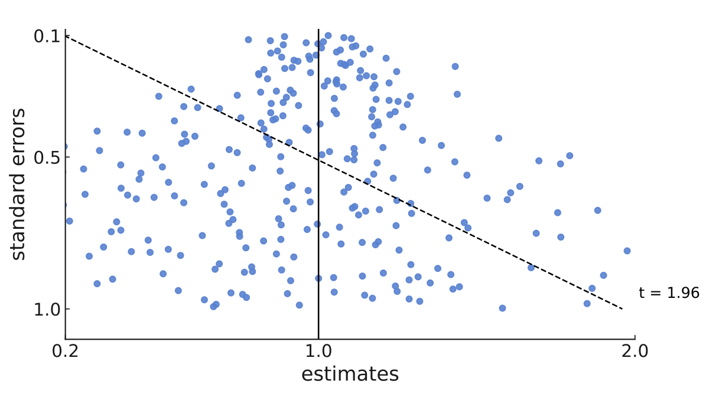
Publication bias: mean too large p. 10
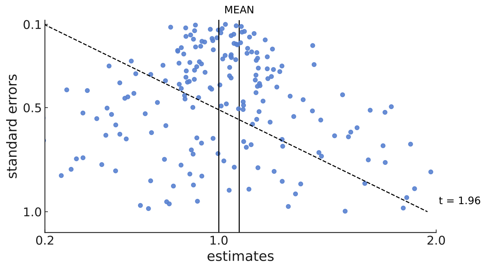
Publication bias: PEESE works p. 11
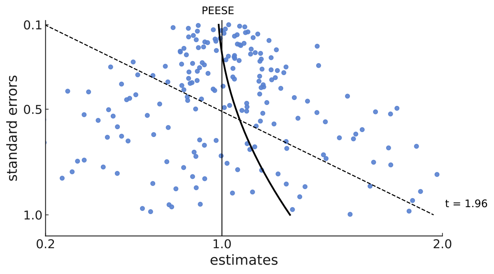
p-hacking on estimates: PEESE works p. 12
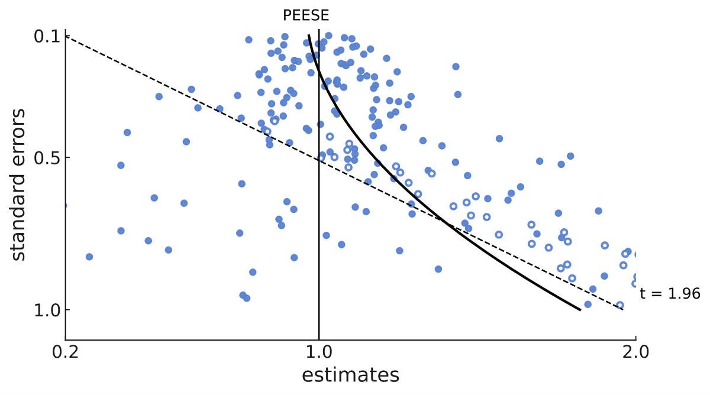
Back to no selection p. 13
Aggressive p-hacking: PEESE in trouble p. 14
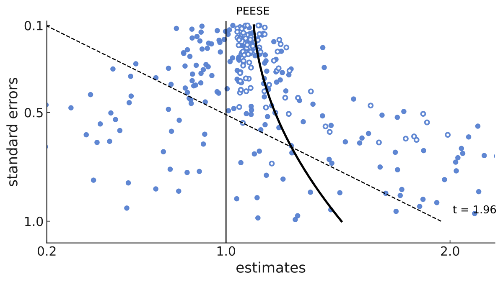
Could this happen? Meta of education premium p. 18
True model: Earnings_j = γ Education_j + δ Ability_j + v_j,
Omitted variable: Earnings_j = γ Education_j + w_j,
Proxy: Earnings_j = γ Education_j + ω IQ/PGS_j + x_j,
Instrument: Earnings_j = γ Education_j + z_j, Policy reform
Ability not observed.
Primary studies:
- ignore ability → γ̂ too large, SE(γ̂) too small.
- include a proxy → γ̂ smaller, SE(γ̂) larger.
- quasi-experiment → γ̂ even smaller, SE(γ̂) even larger.
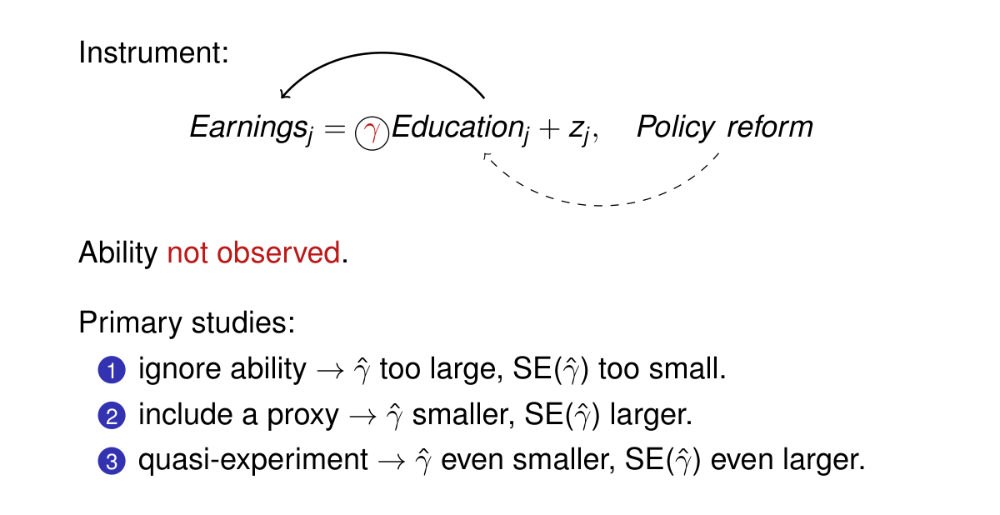
Some estimates spuriously large & precise p. 19

All meta estimators biased upwards p. 20
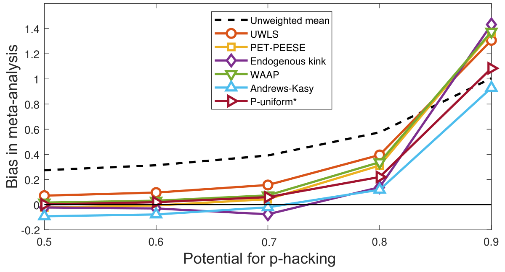
Why? Key meta assumption broken p. 21
Traditional meta:
Ê_i = E_0 + β SE(Ê)^2_i + u_i,
corr(SE,u) ≠ 0 ⇒ β̂ and Ê_0 biased.
Natural solution: 1/N instrumenting SE(Ê)_i^2 → MAIVE.
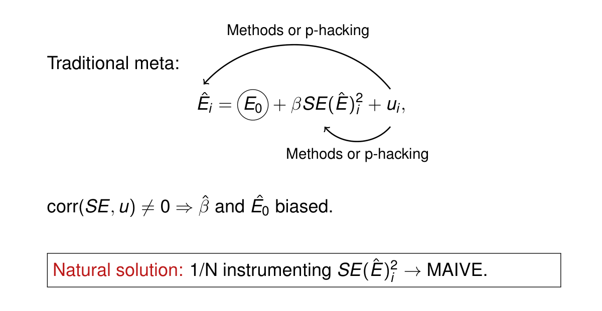
Meta-analysis instrumental variable estimator p. 24
MAIVE intuition: Ê_i = E_0 + β SE(Ê)^2_i + u_i, where the standard error, by definition, depends on 1/N_i.
MAIVE first stage: SE(Ê)^2_i = α_0 + α_1 (1/N_i) + π_i, where π_i stands for hacking or misspecifications.
MAIVE adjustment: SE(Ê)^2_(adj,i) = α̂_0 + α̂_1 (1/N_i). On the slide, π_i and its label, hacking or misspecifications, are struck out: the adjusted standard error keeps only the part explained by sample size.
- Can add controls.
- Plug MAIVE-adjusted SEs into other estimators.
- In practice it's better to use logs in the first stage.
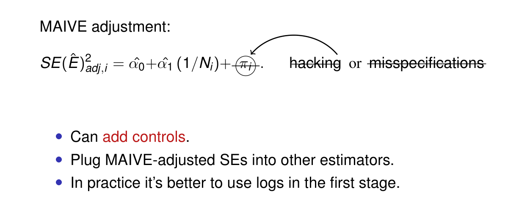
Aggressive p-hacking: PEESE in trouble p. 25
Meta-Analysis Instrumental Variable Estimator p. 26
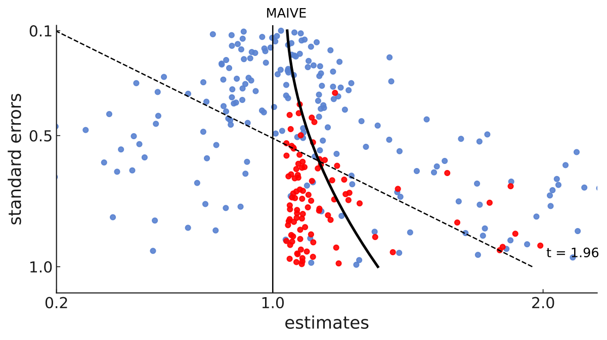
MAIVE published last year p. 27
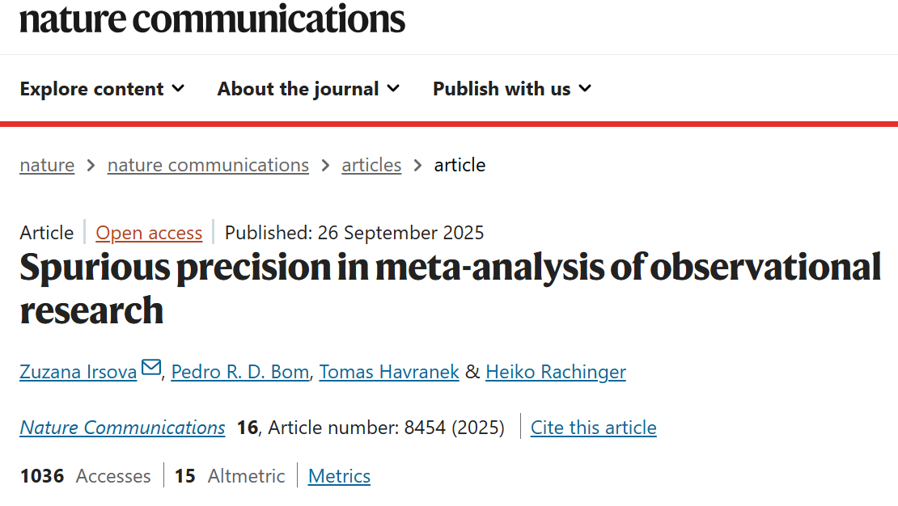
Meta-Analysis Instrumental Variable Estimator p. 28
Weighted Adjustment Instrumental Variable Estimator p. 29
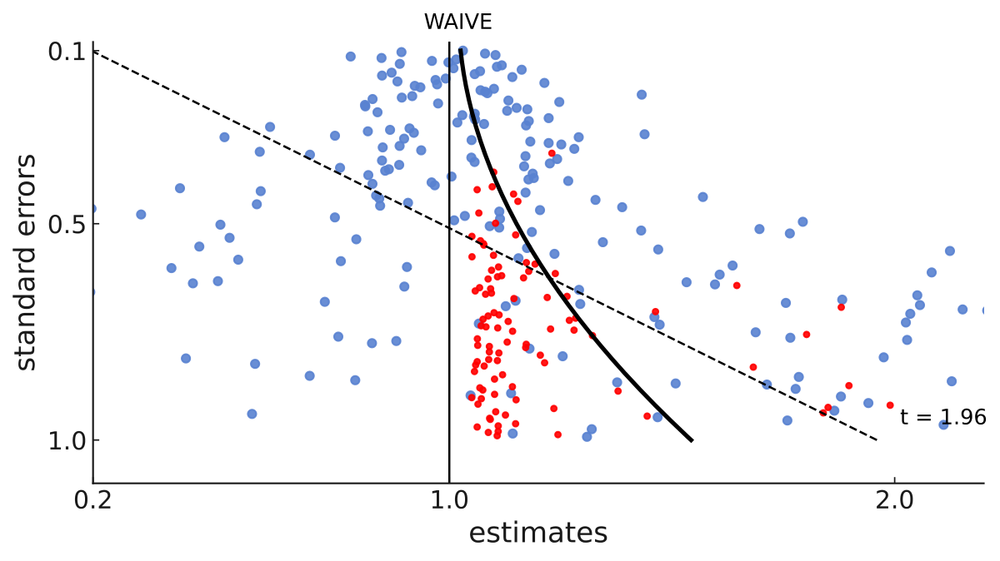
WAIVE first stage - same as MAIVE p. 30
Residual from MAIVE first stage: SE(Ê)^2_i = α_0 + α_1 (1/N_i) + π_i. On the slide, an arrow labels π_i: hacking if negative?
- Negative π_i → reported SE too small relative to N → possibly p-hacking.
- Analogy: profit shifting in accounting (regress profits on sales, look at residuals).
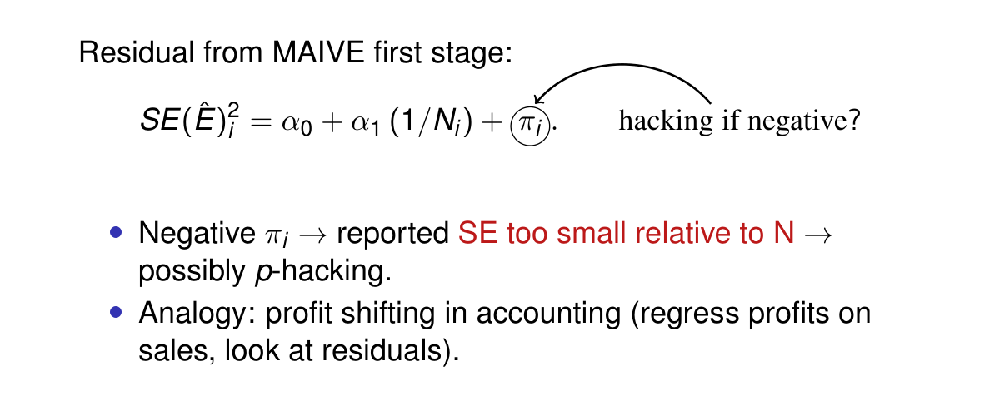
WAIVE weight for the second stage p. 31
Exponential tilt: ω_i = exp [- max(0, -π_i)]
- Penalize only negative residuals (π_i<0) - downweight spuriously precise estimates.
- Weight ∈(0,1], smooth and proportional decay.
- Then run PEESE of Ê_i on SE(Ê)^2_(adj,i) with weights ω_i.
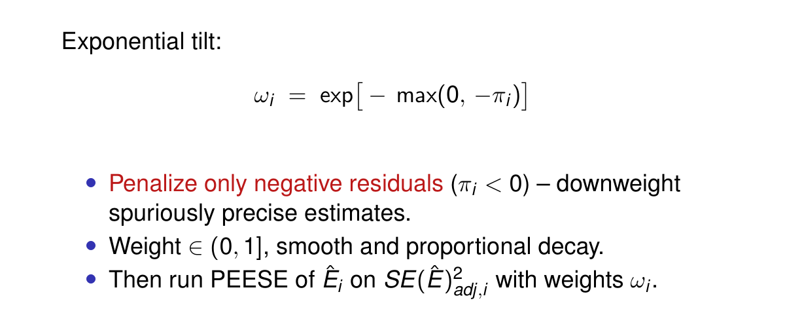
WAIVE alleviates the bias p. 32
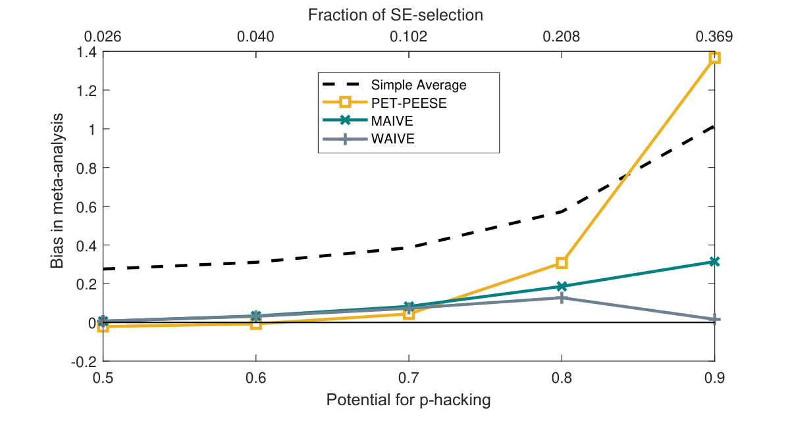
WAIVE reduces MAIVE in 2/3 of meta-analyses p. 33
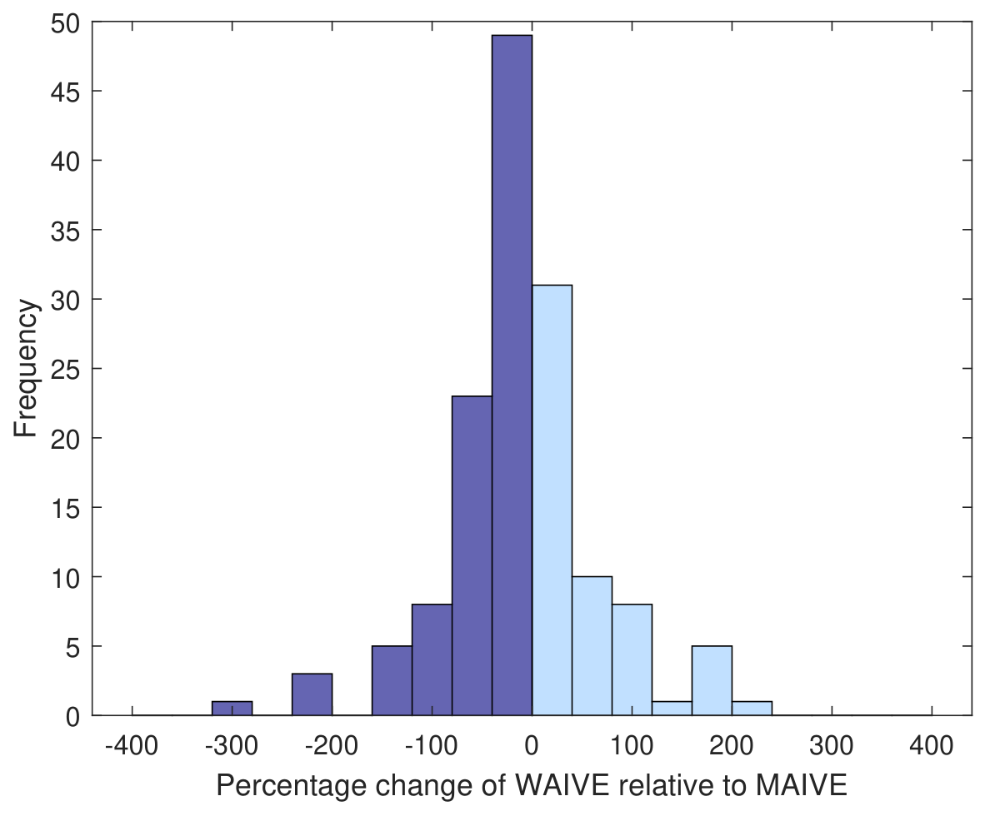
Practical issues p. 34
WAIVE still just an experimental concept.
Papers using MAIVE p. 35
- Irsova Z., P. Bom, T. Havranek, & H. Rachinger (2025): Spurious Precision in Meta-Analysis of Observational Research. Nature Communications 16: 8454.
- Opatrny M., T. Havranek, Z. Irsova, & M. Scasny (2026): Publication Bias and Model Uncertainty in Measuring the Effect of Class Size on Achievement. Journal of Labor Economics, forthcoming.
- Cala P., T. Havranek, Z. Irsova, M. Luskova, J. Matousek & J. Novak (2026): Financial Incentives and Performance: A Meta-Analysis of Experiments in Economics. Journal of Political Economy Microeconomics, forthcoming.
Diagnostic: excess precision p. 36
Residual from meta-regression: log SE(Ê_i) = α_0 + α_1 log N_i + π_i [<0: excess precision]
- Negative π_i → reported SE too small relative to N → may indicate p-hacking.
- Interpretation: π_i=-0.25 means SE is roughly one quarter smaller than expected.
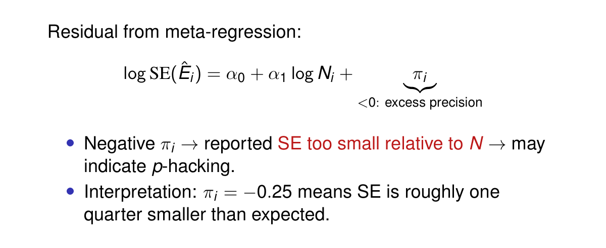
Residual discontinuity test (simulated) p. 37
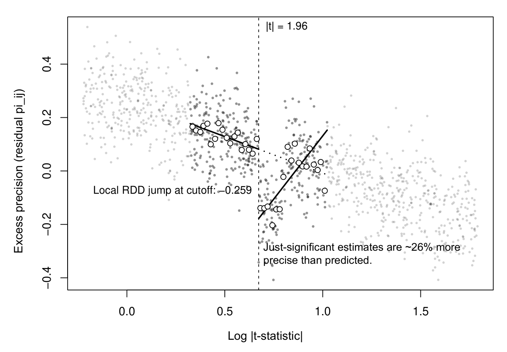
Your turn: where does MAIVE land? p. 38
Mean -0.260
PET-PEESE -0.127
MAIVE: closer to zero, or further?
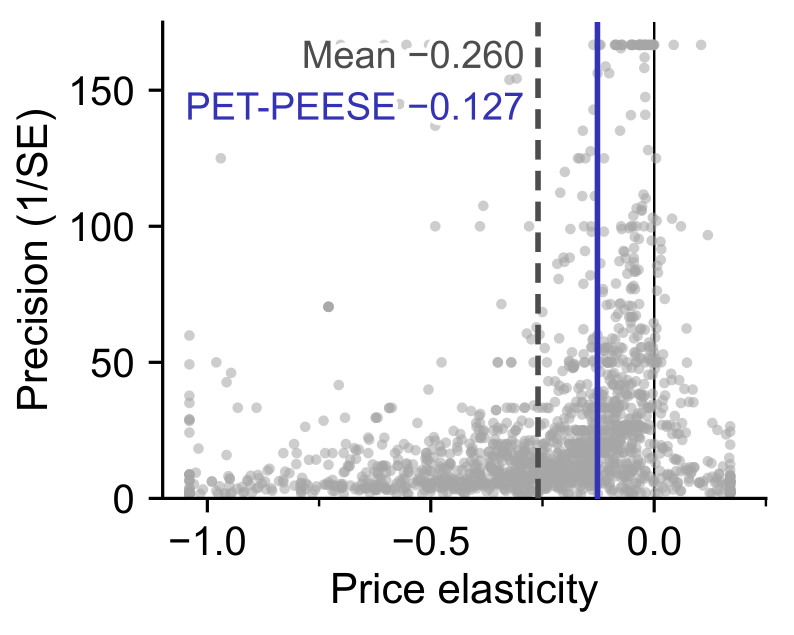
MAIVE: -0.24 p. 39
| PET-PEESE | -0.127 |
| equal weights | -0.226 |
| MAIVE | -0.243 |
Log first stage, F = 25; SE 0.038, clustered by study
42 estimates report SEs far below what their sample size predicts. They carry 37% of PET-PEESE's weight and are small in absolute value.
Levels first stage: F = 6.9, and the app warns.
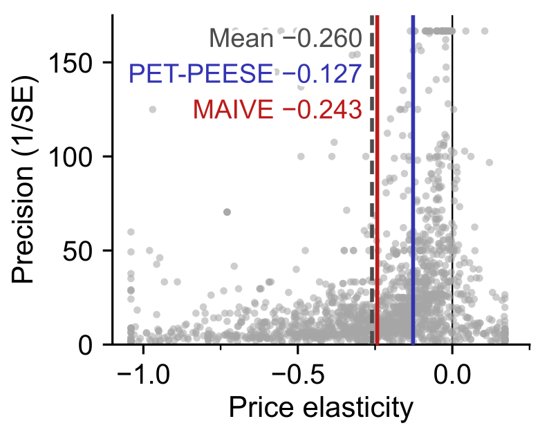
WAIVE, flagged p. 40
The app and Claude (through the API): -0.19. With the weights the right way round: -0.28.
Experimental. The package applies WAIVE's weights inverted; reported as MAIVE issue #30.
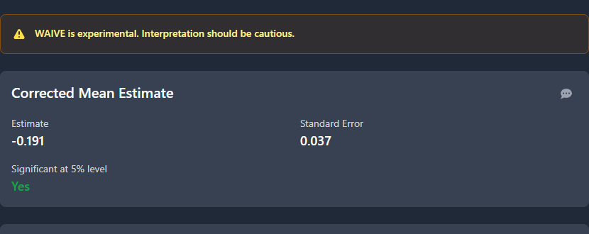
RDT in EasyMeta p. 41
Jump at |t| = 1.96: -0.19 (p = 0.13). A single literature gives this test little power.
App only: the API does not offer RDT.
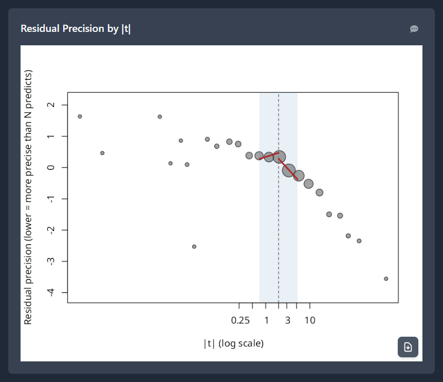
Guidelines
MAER-Net guidelines, updated for AI p. 42
Cook et al. (2026a, 2026b), Journal of Economic Surveys. Thirteen authors, among them Bartos, Stanley, Gechert and Prante.
Recommendations; deviations should be disclosed. Free at meta-analysis.cz/guidelines.
New items in the reporting checklist p. 43
| Stage | New in 2026 |
|---|---|
| Search | AI use disclosed; AI search logs shared |
| Screening | random audit of 10% (at least 100 records); false-negative rate |
| Coding | AI may be a coder; humans recode 10% (at least 20 studies); kappa |
| Data | a dummy for human-reviewed estimates; share coded by AI |
| Figures | “Figure produced by AI.” if not validated |
| Replication | tool, version, dates, prompts, settings |
Cook et al. (2026b) replaces the 2020 guidelines for every meta-analysis, with or without AI.
AI Tools
Our open AI feedback tools p. 44
| Dec 2025 | Duel | ChatGPT against Gemini, copy and paste |
| Mar 2026 | MAD | four chatbots debate, a fresh chat sums up |
| May 2026 | mad-research | Claude Code and Codex run the debate |
| Jun 2026 | paper-workshop | referee agents built for your paper |
Free on GitHub, github.com/tjhavranek. Cook et al. (2026b) cite the Duel + MAD protocol for audits.
Does debate help? A pre-registered test p. 45
- 55 published or accepted meta-analyses in economics: 27 ours, 28 from JoES since 2022
- Three AI reports per paper: one prompt to one model, mad-research, paper-workshop
- Same template and length, tool names removed, random order
- Authors of 44 of them rank the reports by usefulness
Pre-registered on OSF on 22 June 2026, before any report was written.
Probably not, at least for meta-analyses p. 46
- Single pass ahead of mad-research on 32 of 44 papers, of paper-workshop on 30 (mean rank 1.59 vs 2.25 and 2.16)
- paper-workshop used about 30 times the tokens of the single pass
- An AI judge (Gemini) would have picked paper-workshop
Havranek and Irsova (2026), arXiv 2607.14713; CEPR DP 21752.
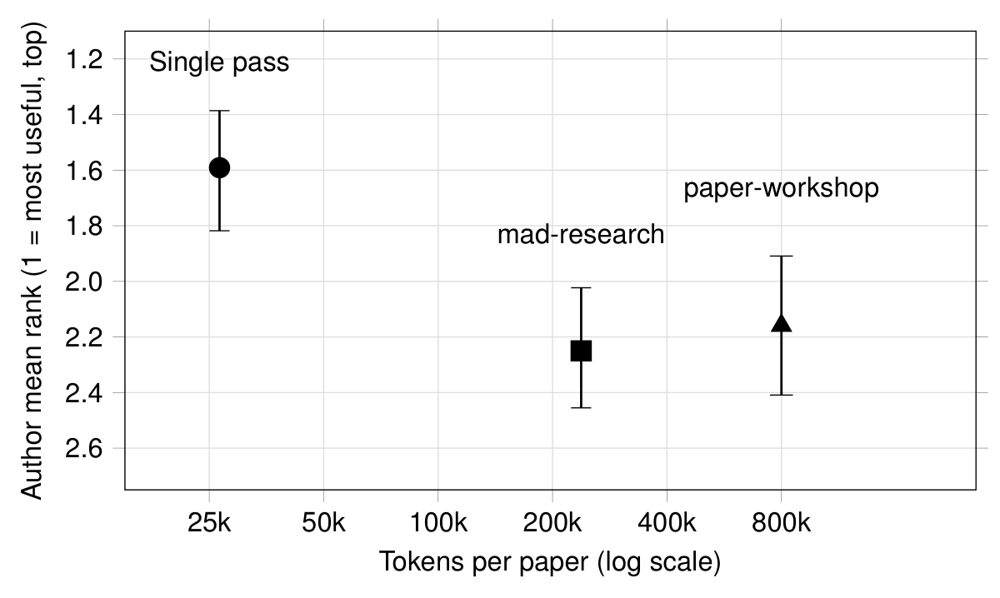
The single pass: this prompt, one call p. 47
Verbatim from the replication package, doi 10.5281/zenodo.21273528.
Takeaway
Practical takeaway p. 48
Selected recent papers p. 49
- Irsova Z., P. Bom, T. Havranek, & H. Rachinger (2025): Spurious Precision in Meta-Analysis of Observational Research. Nature Communications 16: 8454.
- Havranek T., & Z. Irsova (2026): Does Multi-Agent Debate Improve AI Feedback on Research Papers? arXiv 2607.14713.
- Cala P., T. Havranek, Z. Irsova, M. Luskova, J. Matousek & J. Novak (2026): Financial Incentives and Performance: A Meta-Analysis of Experiments in Economics. Journal of Political Economy Microeconomics, forthcoming.
Claude Opus 5, Claude Fable 5.1 and GPT-6 Astra were used in preparing this demo and presentation.
Backup
Backup: upload and column mapping p. 50
All four columns map automatically.
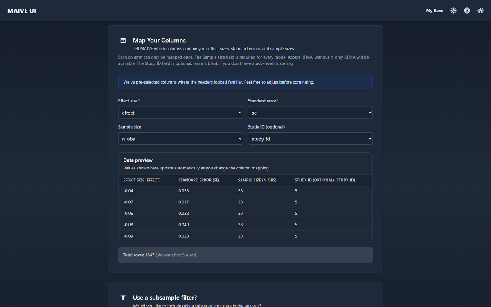
Backup: WLS, PET-PEESE, winsorize 2.5% p. 51
Settings for the first run.
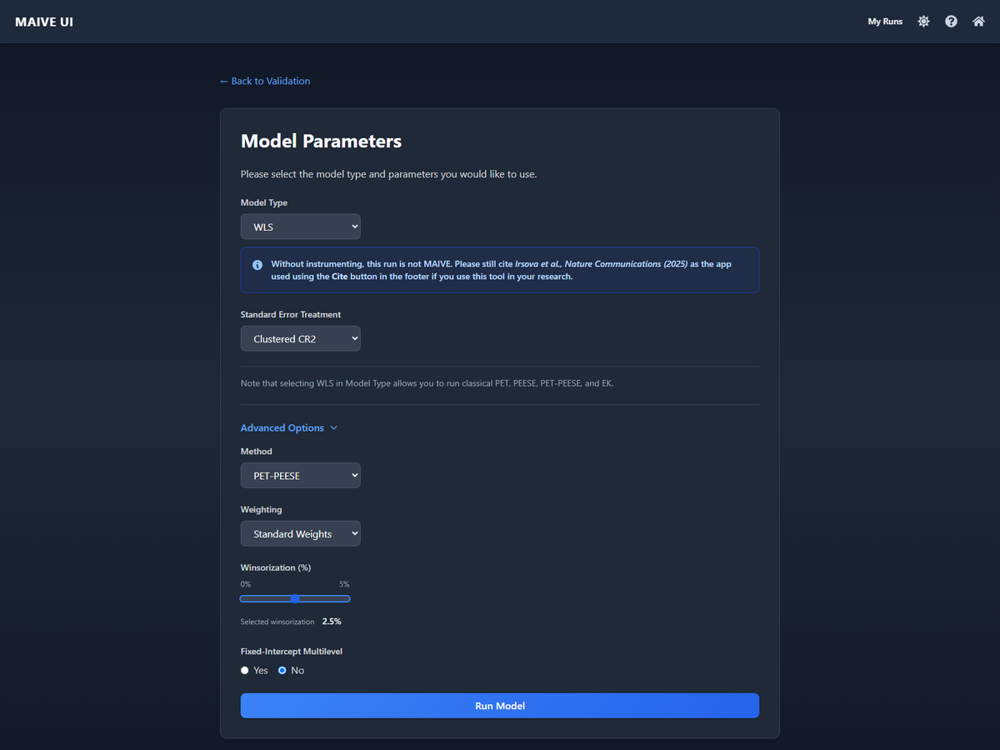
Backup: PET-PEESE p. 52
PET-PEESE picks PEESE: -0.127.
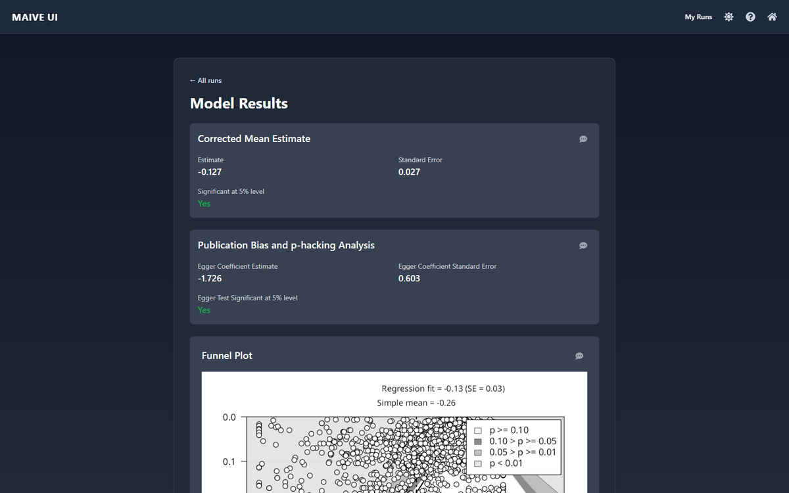
Backup: funnel plot in the app p. 53
Same estimates as on the demo slide; the app puts SE on the vertical axis, 0 at the top.
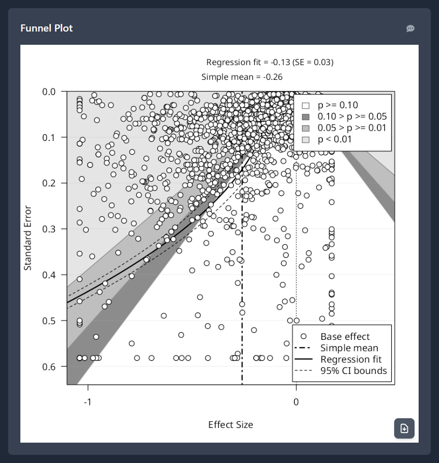
Backup: EK p. 54
EK finds no kink, so it equals PET: -0.105.
Backup: what the API returned p. 55
POST https://api.maive.eu/v1/run-model
1,647 rows, winsorize 2.5
recipe PET-PEESE HTTP 200
effectEstimate -0.127104860252972
standardError 0.0269191742163644 (PEESE selected)
recipe EK HTTP 200
effectEstimate -0.10525106160908
standardError 0.0327033930987689
MAIVE, log first stage HTTP 200
effectEstimate -0.24255281691904
standardError 0.037775202532599
firstStageFStatistic 25.03
WAIVE, same settings HTTP 200
effectEstimate -0.190975882295736Backup: MAIVE, levels first stage p. 56
Levels first stage: MAIVE -0.126, F = 6.9, and the app warns.
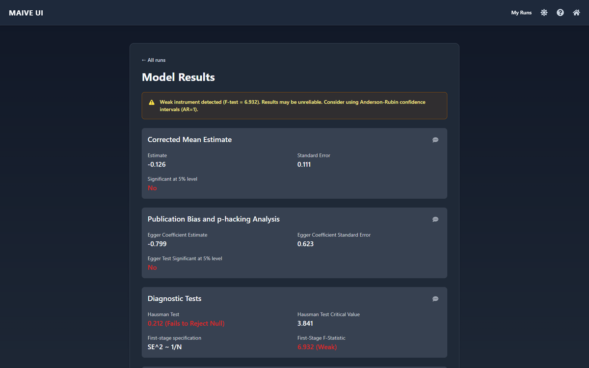
Backup: MAIVE, log first stage p. 57
Log first stage: F = 25, MAIVE -0.24.
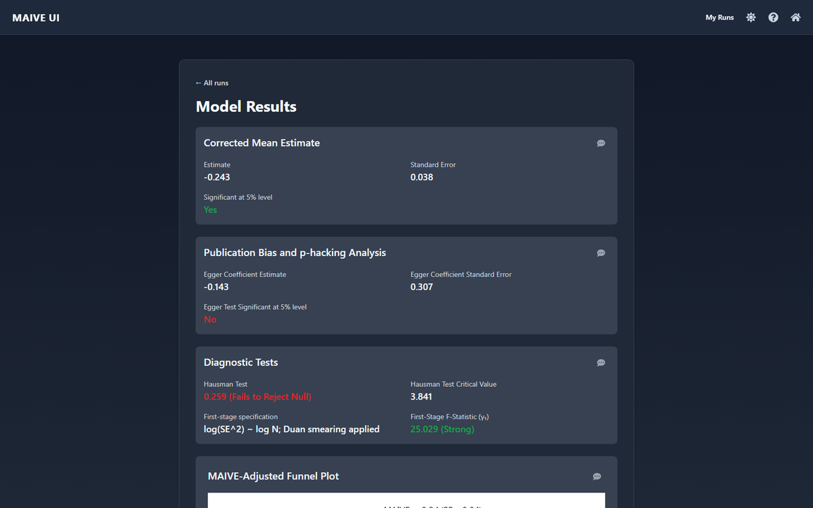
Backup: WAIVE p. 58
WAIVE -0.19; experimental, weights inverted (MAIVE issue #30).
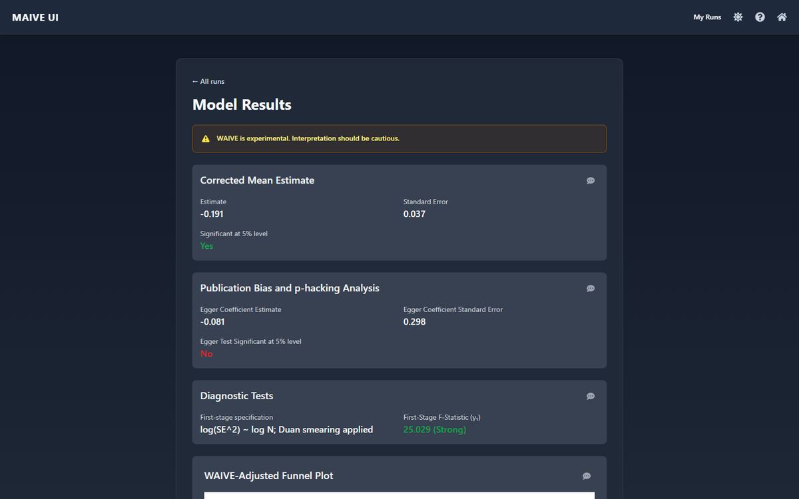
Backup: RDT p. 59
Jump -0.19 (p = 0.13): no clear jump at |t| = 1.96.
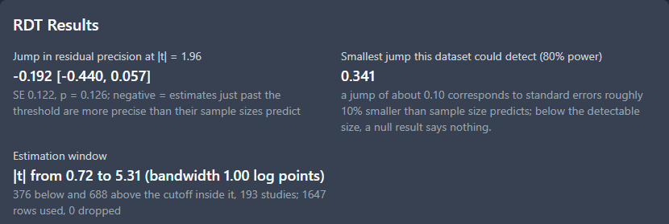
Back to the workshop page: the demo data, and the prompts for AI assistants.